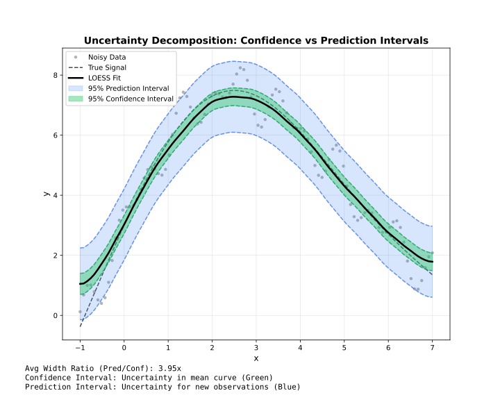

Intervals
Confidence and prediction intervals for uncertainty quantification.
Overview

Confidence and prediction intervals are available in all three adapters: Batch, Streaming, and Online.
| Type | Represents | Width | Use |
|---|---|---|---|
| Confidence | Uncertainty in mean curve | Narrow | Where is the true trend? |
| Prediction | Uncertainty for new points | Wide | Where will new data fall? |
Confidence Intervals
Estimate uncertainty in the smoothed curve itself.
using FastLOESS
using Random, Statistics
rng = MersenneTwister(42)
x = collect(range(0, 2π, length=100))
y = sin.(x) .+ randn(rng, 100) .* 0.3
model = Loess(; fraction=0.5, confidence_intervals=0.95)
result = fit(model, x, y)
for i in 1:length(result.y)
println("x=$(result.x[i]): y=$(result.y[i]) [$(result.confidence_lower[i]), $(result.confidence_upper[i])]")
endx=0.0: y=0.4060231290969918 [0.27534705967276685, 0.5366991985212167]
x=0.06346651825433926: y=0.4129500005674865 [0.2814707208419135, 0.5444292802930595]
x=0.12693303650867852: y=0.4209038697089753 [0.2884408811508945, 0.5533668582670561]
x=0.19039955476301776: y=0.4300096645778583 [0.296381343433538, 0.5636379857221785]
x=0.25386607301735703: y=0.44030250114682207 [0.3053444062444236, 0.5752605960492205]
x=0.3173325912716963: y=0.45171570232101754 [0.315277761672887, 0.5881536429691481]
x=0.3807991095260355: y=0.464221506555541 [0.32618961007937586, 0.6022534030317062]
x=0.44426562778037476: y=0.4777921523054884 [0.3381062622310269, 0.6174780423799499]
x=0.5077321460347141: y=0.49239987802595614 [0.3510678065280197, 0.6337319495238926]
x=0.5711986642890533: y=0.5080169221720403 [0.36511181246413316, 0.6509220318799475]
x=0.6346651825433925: y=0.5246155231988372 [0.3802341584408009, 0.6689968879568735]
x=0.6981317007977318: y=0.542167919561443 [0.39641843683007666, 0.6879174022928092]
x=0.761598219052071: y=0.5606463497149538 [0.4136558688711418, 0.7076368305587657]
x=0.8250647373064103: y=0.5788795196842808 [0.4307963869946283, 0.7269626523739332]
x=0.8885312555607495: y=0.5958313413076651 [0.44681283750315187, 0.7448498451121783]
x=0.9519977738150889: y=0.6116768617601982 [0.46188701747961297, 0.7614667060407834]
x=1.0154642920694281: y=0.6265911282169712 [0.4761789780593608, 0.7770032783745815]
x=1.0789308103237674: y=0.6407491878530756 [0.48981344617209266, 0.7916849295340584]
x=1.1423973285781066: y=0.6543260878436028 [0.5029323129590532, 0.8057198627281524]
x=1.2058638468324459: y=0.667496875363644 [0.5156900848657091, 0.8193036658615789]
x=1.269330365086785: y=0.6804365975882906 [0.5282415512010392, 0.8326316439755419]
x=1.3327968833411243: y=0.6933203016926337 [0.5407497927824692, 0.8458908106027982]
x=1.3962634015954636: y=0.706323034851765 [0.5533755315592517, 0.8592705381442782]
x=1.4597299198498028: y=0.7179262405435642 [0.5645946199101742, 0.8712578611769543]
x=1.523196438104142: y=0.726560384617326 [0.5728377647793326, 0.8802830044553194]
x=1.5866629563584813: y=0.7323240478052622 [0.5782051504684268, 0.8864429451420975]
x=1.6501294746128206: y=0.7353158108395855 [0.5808090907701793, 0.8898225309089918]
x=1.7135959928671598: y=0.7356342544525082 [0.5807610340101804, 0.890507474894836]
x=1.777062511121499: y=0.7333779593762426 [0.5781676539695204, 0.8885882647829648]
x=1.8405290293758383: y=0.7286455063430012 [0.5731323955598069, 0.8841586171261955]
x=1.9039955476301778: y=0.7215354760849962 [0.5657781632953252, 0.8772927888746673]
x=1.967462065884517: y=0.7121464493344405 [0.5562319017204803, 0.8680609969484007]
x=2.0309285841388562: y=0.7011929646249404 [0.5452401228268147, 0.8571458064230661]
x=2.0943951023931953: y=0.6889494851396545 [0.5331027438191448, 0.8447962264601642]
x=2.1578616206475347: y=0.674854478585122 [0.5192793056975618, 0.8304296514726823]
x=2.2213281389018737: y=0.6583464126678829 [0.5032204072746499, 0.8134724180611158]
x=2.284794657156213: y=0.6388637550944763 [0.48434954965225974, 0.793377960536693]
x=2.3482611754105522: y=0.6158449735714421 [0.46207890890254866, 0.7696110382403355]
x=2.4117276936648917: y=0.5887285358053197 [0.4358061478843538, 0.7416509237262856]
x=2.4751942119192307: y=0.5569529095026489 [0.4049118900733217, 0.708993928931976]
x=2.53866073017357: y=0.5199565623699689 [0.3687709071712026, 0.6711422175687352]
x=2.6021272484279097: y=0.48010248687351154 [0.3296904018041332, 0.6305145719428898]
x=2.6655937666822487: y=0.43999369624270096 [0.2902284473146119, 0.5897589451707901]
x=2.729060284936588: y=0.3994286893288636 [0.25014846485269526, 0.548708913805032]
x=2.792526803190927: y=0.35820596498332785 [0.20922105107317773, 0.507190878893478]
x=2.8559933214452666: y=0.3161240220574202 [0.16723315319077026, 0.4650148909240701]
x=2.9194598396996057: y=0.2729813594024686 [0.12398966558477895, 0.4219730532201582]
x=2.982926357953945: y=0.22857647586980004 [0.07931182767613823, 0.3778411240634618]
x=3.046392876208284: y=0.18270787031074243 [0.03303197694567797, 0.3323837636758069]
x=3.1098593944626236: y=0.1351740415766225 [-0.01501004087927732, 0.2853581240325223]
x=3.1733259127169626: y=0.08775054710346472 [-0.06299567124444924, 0.23849676545137868]
x=3.236792430971302: y=0.042210165260676794 [-0.10911340852442021, 0.1935337390457738]
x=3.300258949225641: y=-0.001652773700336528 [-0.15352821570395014, 0.15022266830327707]
x=3.3637254674799806: y=-0.044043939528171684 [-0.19640340536611978, 0.10831552630977642]
x=3.4271919857343196: y=-0.08516900197142395 [-0.23790824539053768, 0.06757024144768979]
x=3.490658503988659: y=-0.12523363077868963 [-0.27824790296966395, 0.02778064141228473]
x=3.554125022242998: y=-0.16444349569856415 [-0.31764452285426437, -0.011242468542863954]
x=3.6175915404973376: y=-0.20300426647964384 [-0.356316527868504, -0.049692005090783725]
x=3.6810580587516766: y=-0.24112161287052397 [-0.3944858997420642, -0.08775732599898373]
x=3.744524577006016: y=-0.279001204619801 [-0.43236971764797355, -0.12563269159162843]
x=3.8079910952603555: y=-0.3163010814987244 [-0.46964581307270103, -0.1629563499247477]
x=3.8714576135146945: y=-0.3524400880606363 [-0.5057447574424431, -0.19913541867882958]
x=3.934924131769034: y=-0.3872651012272716 [-0.5405193502605742, -0.23401085219396903]
x=3.998390650023373: y=-0.4206229979203644 [-0.5738169709210382, -0.26742902491969056]
x=4.0618571682777125: y=-0.45236065506164963 [-0.6054926905460909, -0.29922861957720837]
x=4.1253236865320515: y=-0.48232494957286143 [-0.6353970877863273, -0.3292528113593955]
x=4.1887902047863905: y=-0.5103627583757344 [-0.6633827306622916, -0.35734278608917724]
x=4.25225672304073: y=-0.5363209583920037 [-0.6893083501861317, -0.38333356659787565]
x=4.3157232412950695: y=-0.5600464265434028 [-0.7130246997858085, -0.407068153300997]
x=4.3791897595494085: y=-0.5815256229928024 [-0.7345113478750499, -0.42853989811055493]
x=4.4426562778037475: y=-0.6008259798662484 [-0.7538233401118773, -0.4478286196206195]
x=4.506122796058087: y=-0.6179158320302385 [-0.7709079731276268, -0.46492369093285013]
x=4.569589314312426: y=-0.63276351435127 [-0.7857270229333465, -0.47980000576919346]
x=4.6330558325667655: y=-0.6453373616958411 [-0.7982544667164334, -0.4924202566752488]
x=4.6965223508211045: y=-0.6556057089304494 [-0.8084554496829982, -0.5027559681779007]
x=4.759988869075444: y=-0.6635368909215926 [-0.8162963004461846, -0.5107774813970006]
x=4.823455387329783: y=-0.6690992425357686 [-0.8217218597346784, -0.5164766253368588]
x=4.886921905584122: y=-0.6722610986394747 [-0.8246742709960517, -0.5198479262828977]
x=4.9503884238384614: y=-0.6729907940992091 [-0.8251009823389763, -0.520880605859442]
x=5.013854942092801: y=-0.6716379646266619 [-0.8233591844526383, -0.5199167448006855]
x=5.07732146034714: y=-0.6685208630971357 [-0.8197828290733694, -0.5172588971209019]
x=5.140787978601479: y=-0.6635607501225467 [-0.8143124091266839, -0.5128090911184094]
x=5.204254496855819: y=-0.6566788863148108 [-0.8068865418819688, -0.5064712307476527]
x=5.267721015110158: y=-0.6477965322858444 [-0.79744080695776, -0.4981522576139289]
x=5.331187533364497: y=-0.6368349486475635 [-0.7859024574022891, -0.4877674398928379]
x=5.394654051618836: y=-0.6237153960118843 [-0.7721895793704368, -0.47524121265333186]
x=5.458120569873176: y=-0.6083591349907226 [-0.7562364455856722, -0.460481824395773]
x=5.521587088127515: y=-0.5906874261959953 [-0.7379778729899655, -0.44339697940202516]
x=5.585053606381854: y=-0.572321243378565 [-0.7190487020037614, -0.42559378475336873]
x=5.648520124636193: y=-0.5548022284942352 [-0.701010048520221, -0.40859440846824946]
x=5.711986642890533: y=-0.5379326444623319 [-0.6836712018838484, -0.3921940870408153]
x=5.775453161144872: y=-0.521514754202182 [-0.6668212514288814, -0.37620825697548255]
x=5.838919679399211: y=-0.5053508206331115 [-0.6502483717778194, -0.3604532694884038]
x=5.90238619765355: y=-0.489243106674447 [-0.6337238663046538, -0.34476234704424014]
x=5.96585271590789: y=-0.4729938752455145 [-0.617019333613372, -0.328968416877657]
x=6.029319234162229: y=-0.4564053892656408 [-0.5999147362143618, -0.3128960423169198]
x=6.092785752416568: y=-0.4392799116541519 [-0.5822090004336844, -0.29635082287461945]
x=6.156252270670907: y=-0.42141970533037454 [-0.5637046640579061, -0.279134746602843]
x=6.219718788925247: y=-0.4042558716831264 [-0.5458412524755225, -0.2626704908907302]
x=6.283185307179586: y=-0.3891446228107715 [-0.5299935895258745, -0.2482956560956685]Prediction Intervals
Estimate where new observations might fall.
using FastLOESS
using Random, Statistics
rng = MersenneTwister(42)
x = collect(range(0, 2π, length=100))
y = sin.(x) .+ randn(rng, 100) .* 0.3
model = Loess(; fraction=0.5, prediction_intervals=0.95)
result = fit(model, x, y)
println("Prediction bounds: [$(result.prediction_lower[1]), $(result.prediction_upper[1])]")Prediction bounds: [-0.25110468603138336, 1.063150944225367]Both Intervals
Request both types simultaneously:
using FastLOESS
using Random, Statistics
rng = MersenneTwister(42)
x = collect(range(0, 2π, length=100))
y = sin.(x) .+ randn(rng, 100) .* 0.3
model = Loess(;
fraction=0.5,
confidence_intervals=0.95,
prediction_intervals=0.95
)
result = fit(model, x, y)
println("First smoothed value (95% CI + PI): ", result.y[1])First smoothed value (95% CI + PI): 0.4060231290969918Confidence Levels
Common levels and their z-values:
| Level | z-value | Interpretation |
|---|---|---|
| 0.90 | 1.645 | 90% of intervals contain true value |
| 0.95 | 1.960 | 95% of intervals contain true value |
| 0.99 | 2.576 | 99% of intervals contain true value |
using FastLOESS
using Random, Statistics
rng = MersenneTwister(42)
x = collect(range(0, 2π, length=100))
y = sin.(x) .+ randn(rng, 100) .* 0.3
# 99% confidence interval
model = Loess(; confidence_intervals=0.99)
result = fit(model, x, y)
println("First smoothed value (99% CI): ", result.y[1])First smoothed value (99% CI): 0.4342325773533715Standard Errors
Access standard errors directly (available when intervals are computed):
using FastLOESS
using Random, Statistics
rng = MersenneTwister(42)
x = collect(range(0, 2π, length=100))
y = sin.(x) .+ randn(rng, 100) .* 0.3
model = Loess(; confidence_intervals=0.95)
result = fit(model, x, y)
for (i, se) in enumerate(result.standard_errors)
println("Point $i: SE = $se")
endPoint 1: SE = 0.06444279787727603
Point 2: SE = 0.064874430237591
Point 3: SE = 0.06533617479616846
Point 4: SE = 0.06582547589559347
Point 5: SE = 0.06633734215499101
Point 6: SE = 0.06686445264224286
Point 7: SE = 0.06739864091176447
Point 8: SE = 0.06792989989179805
Point 9: SE = 0.06844966912066411
Point 10: SE = 0.06895463851895232
Point 11: SE = 0.06944032759561093
Point 12: SE = 0.06990101960915968
Point 13: SE = 0.07033233790444345
Point 14: SE = 0.07073009630047607
Point 15: SE = 0.07109247997610166
Point 16: SE = 0.07141814919369245
Point 17: SE = 0.07170647551229027
Point 18: SE = 0.07195894254460485
Point 19: SE = 0.07217776152719994
Point 20: SE = 0.07236819456631292
Point 21: SE = 0.07253732297722598
Point 22: SE = 0.07269440281418463
Point 23: SE = 0.07284498105356949
Point 24: SE = 0.07299151473664305
Point 25: SE = 0.07313422099219404
Point 26: SE = 0.07327244731392353
Point 27: SE = 0.07340457689412268
Point 28: SE = 0.07352935760435039
Point 29: SE = 0.07364892725060981
Point 30: SE = 0.07376476177239033
Point 31: SE = 0.07387719889460138
Point 32: SE = 0.07398582234991177
Point 33: SE = 0.07408826512144004
Point 34: SE = 0.07418106754910866
Point 35: SE = 0.07426122631163364
Point 36: SE = 0.07432332773181773
Point 37: SE = 0.07436329572835783
Point 38: SE = 0.07437765837984754
Point 39: SE = 0.07436348602654143
Point 40: SE = 0.0743180613347254
Point 41: SE = 0.07423979267708299
Point 42: SE = 0.074129060565657
Point 43: SE = 0.07398738874660203
Point 44: SE = 0.07381892243439223
Point 45: SE = 0.07363042961196678
Point 46: SE = 0.07342902908445417
Point 47: SE = 0.07322217344897433
Point 48: SE = 0.07301791077795294
Point 49: SE = 0.07282438717157931
Point 50: SE = 0.0726478776895508
Point 51: SE = 0.07249324267665166
Point 52: SE = 0.07236448637605465
Point 53: SE = 0.07226354938895306
Point 54: SE = 0.07218802066796519
Point 55: SE = 0.0721312180947952
Point 56: SE = 0.07208639303426603
Point 57: SE = 0.07204828141748237
Point 58: SE = 0.07201311697778215
Point 59: SE = 0.07198088252656655
Point 60: SE = 0.07195378942151824
Point 61: SE = 0.0719337508042038
Point 62: SE = 0.07192020545809438
Point 63: SE = 0.07191051161878378
Point 64: SE = 0.07190313159308825
Point 65: SE = 0.07189728631240352
Point 66: SE = 0.07189483382999298
Point 67: SE = 0.07189686559693662
Point 68: SE = 0.07190337068486118
Point 69: SE = 0.0719144598069939
Point 70: SE = 0.07192939132963364
Point 71: SE = 0.07194585653019378
Point 72: SE = 0.07195998105610828
Point 73: SE = 0.07196782083524991
Point 74: SE = 0.07196419839864107
Point 75: SE = 0.07194376929381774
Point 76: SE = 0.07190470833175741
Point 77: SE = 0.07184608178254184
Point 78: SE = 0.0717669444167753
Point 79: SE = 0.07166749204345049
Point 80: SE = 0.07154786719184238
Point 81: SE = 0.07140899534895824
Point 82: SE = 0.07125154802645543
Point 83: SE = 0.0710756114278029
Point 84: SE = 0.07088098648714866
Point 85: SE = 0.07066609785793422
Point 86: SE = 0.07042994991168063
Point 87: SE = 0.07017301227766222
Point 88: SE = 0.06989994108596402
Point 89: SE = 0.0696167027390009
Point 90: SE = 0.06932911389018602
Point 91: SE = 0.06904207907964495
Point 92: SE = 0.06875954687243231
Point 93: SE = 0.06848389195099701
Point 94: SE = 0.06821585496502444
Point 95: SE = 0.06795814748653266
Point 96: SE = 0.06771326462518328
Point 97: SE = 0.06748334630189898
Point 98: SE = 0.0672697841123167
Point 99: SE = 0.06707069834190146
Point 100: SE = 0.06688089061439062Availability
Confidence and prediction intervals are only available in Batch mode. Streaming and Online modes do not support intervals.
| Feature | Batch | Streaming | Online |
|---|---|---|---|
| Confidence intervals | ✓ | ✗ | ✗ |
| Prediction intervals | ✓ | ✗ | ✗ |
| Standard errors | ✓ | ✗ | ✗ |